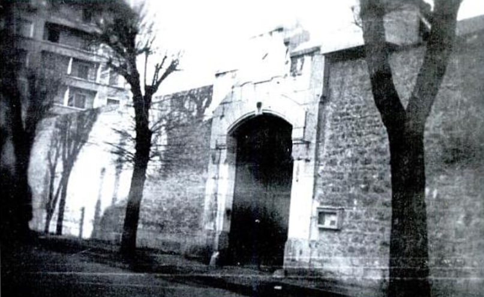
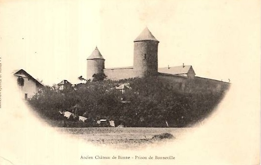
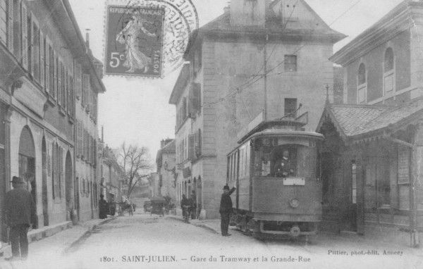
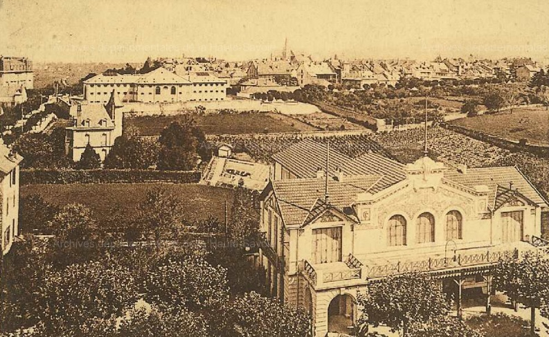

| Département | Images | Ville | Nom | Adresse | Période | Capacité | Histoire du lieu | Nombre d'exécutions |
| Haute-Savoie (74) |  |
Annecy | Maison d'arrêt Saint-François | Rue Guillaume-Fichet | 1865-1969 | 83 places, 15 surveillants (1962) | Détenus transférés à la nouvelle maison d'arrêt de Bonneville. Démolie en 1970 pour laisser la place au parking du palais de justice. | Aucune exécution |
| Haute-Savoie (74) |  |
Bonneville | Château du Rocher | Place de l'Église | -1934 | Servit de prison durant l'Occupation. Fermée au public en 1986 pour insalubrité. | Aucune exécution | |
| Haute-Savoie (74) | Bonneville | Maison d'arrêt | Lieu-dit "Bois-Jolivet" | En service depuis 1969 | 90 places (2015) | Aucune exécution | ||
| Haute-Savoie (74) |  |
Saint-Julien-en-Genevois | Maison d'arrêt | Grande-Rue | -1926 | Faisant presque face à la mairie. Démolie en 1968 pour laisser la place à des immeubles d'habitation. | Aucune exécution | |
| Haute-Savoie (74) |  |
Thonon | Maison d'arrêt | Place de Bassus (angle bd Carnot et place Jean-Moulin) | -1926 | Détruite en 1932 pour faire place à l'école hôtelière Savoie-Léman en 1935. | Aucune exécution |
{kind=link}
{kind=link}
{kind=link}
{kind=link}